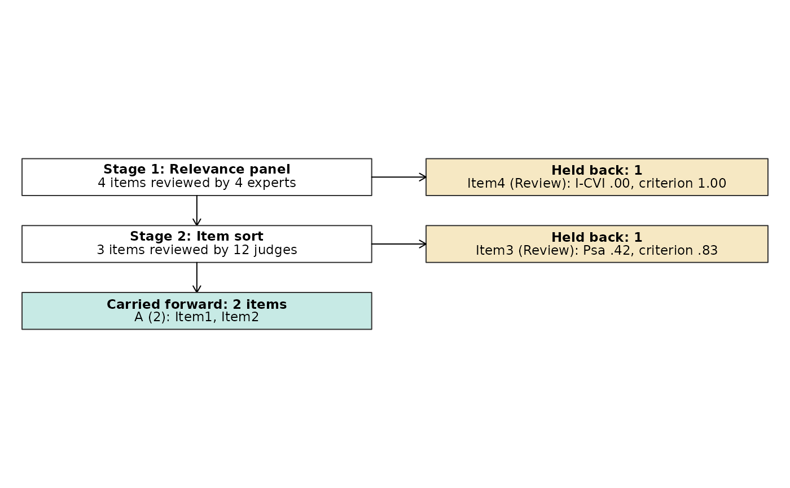

Plot content evidence across review stages
Source:R/content_evidence.R
plot.contentvalid_evidence.RdDraws the two figures of content_evidence().
type = "profile" (default), the item evidence profile, gives one panel
per stage with the items down the side. Each panel shows the statistic that
stage's decision read, its interval as a bar, and its criterion as a dashed
line. A filled symbol met the criterion, an open one was flagged for review,
and a cross marks no decision. "not reviewed" marks an item a stage did not
see. The last column says whether each item was carried, or names the
stages that held it back. Faint lines separate the constructs.
type = "flow", the item flow diagram, follows the items through the
stages, modeled on the PRISMA 2020 flow diagram (Page et al., 2021). Each
stage's box gives how many items it reviewed and by how many judges; its
side box lists each item it held back, with the decision and the number
behind it; and the last box lists the items carried forward, by construct.
Arguments
- x
A
contentvalid_evidenceobject.- type
"profile"or"flow".- apa
TRUE(default) draws in black, white, and gray, as an APA figure is printed.FALSEmarks evidence that met its criterion in teal and evidence under review in brown, a colorblind-safe scheme for slides and posters. Symbols carry the decision either way, so neither reading depends on color.- show_legend
Draw the key above the profile. Default
TRUE.- ...
Additional graphical arguments passed to
graphics::plot()for each panel of the profile. The flow diagram does not use them.
References
Page, M. J., McKenzie, J. E., Bossuyt, P. M., Boutron, I., Hoffmann, T. C., Mulrow, C. D., Shamseer, L., Tetzlaff, J. M., Akl, E. A., Brennan, S. E., Chou, R., Glanville, J., Grimshaw, J. M., Hróbjartsson, A., Lalu, M. M., Li, T., Loder, E. W., Mayo-Wilson, E., McDonald, S., . . . Moher, D. (2021). The PRISMA 2020 statement: An updated guideline for reporting systematic reviews. BMJ, 372, Article n71. doi:10.1136/bmj.n71
Examples
relevance <- matrix(
c(4,4,4,3, 4,4,3,4, 3,4,4,4, 2,2,1,2),
nrow = 4,
dimnames = list(NULL, paste0("Item", 1:4))
)
panel <- expert_validity(relevance, mode = "relevance", lo = 1, hi = 4,
agreement = "none")
sorts <- data.frame(
item = rep(paste0("Item", 1:3), each = 12),
rater = rep(1:12, 3),
target_construct = rep(c("A", "A", "B"), each = 12),
assigned_construct = c(rep("A", 11), "B", rep("A", 10), "B", "B",
rep("B", 5), rep("A", 7))
)
evidence <- content_evidence(`Relevance panel` = panel,
`Item sort` = sort_validity(sorts))
plot(evidence)
 plot(evidence, type = "flow", apa = FALSE)
plot(evidence, type = "flow", apa = FALSE)
